자연생태복원기사 (2022-03-05 기출문제)
1과목: 생태환경조사분석
1. 생태계의 탄소 순환에 관한 내용으로 옳지 않은 것은?
- 수중생태계로 유입된 탄소는 중탄산, 탄산 등의 형태로 존재할 수 있다.
- 먹이연쇄의 각 영양수준에서 탄소는 호흡의 결과로 대기 또는 물로 되돌아간다.
- 탄소는 먹이망의 구조에 영향을 미치며, 먹이망 속의 에너지 흐름에는 영향을 미치지 않는다.
- 독립영양생물은 이산화탄소를 받아들여 그것을 탄수화물, 단백질, 지방, 기타 유기물로 환원시킨다.
(정답률: 85%)

2. 비오톱을 구분하는 항목끼리 묶은 것이 아닌 것은?
- 식생, 비생물 자연환경 조건
- 주변 서식지와의 연결성, 주변효과
- 인위적 영향, 서식지에서의 종 간 관계
- 서식지 내 개체군의 크기, 외래종의 서식현황
(정답률: 65%)
3. 도시 비오톱 지도화의 방법이 아닌 것은?
- 선택적 지도화 방법
- 포괄적 지도화 방법
- 객관적 지도화 방법
- 대표적 지도화 방법
(정답률: 64%)
4. 수중 용존산소량에 관한 설명으로 옳지 않은 것은?
- 수온약층에서 급격히 증가한다.
- 심수층에서는 소량만 존재한다.
- 공기와 직접 접하고 광합성이 활발한 표수층에서 가장 높다.
- 물 속에 용해되어 있는 산소량이며 단위는 주로 ppm으로 나타낸다.
(정답률: 77%)
5. 경관생태학의 특징으로 옳지 않은 것은?
- 단일 생태계 연구에 초점
- 대규모 지역에 대한 연구
- 스케일을 중요시하는 연구
- 경관요소 간의 상호작용 연구
(정답률: 75%)
6. GIS 기능적 요소의 처리순서는?
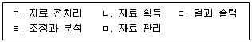
- ㄱ → ㅁ → ㄹ → ㄷ → ㄴ
- ㄴ → ㄱ → ㅁ → ㄹ → ㄷ
- ㄹ → ㄴ → ㄱ → ㅁ → ㄷ
- ㄹ → ㄷ → ㄴ → ㅁ → ㄱ
(정답률: 81%)
7. 기수(brackish water) 지역에 서식하는 규조류의 특징을 바르게 설명한 것은?
- 생물 크기가 대체로 크고 서식종의 종 수가 많다.
- 생물 크기가 대체로 크고 서식종의 종 수가 적다.
- 생물 크기가 대체로 작고 서식종의 종 수가 많다.
- 생물 크기가 대체로 작고 서식종의 종 수가 적다.
(정답률: 63%)
8. 단위면적당 총 건조중량을 피라미드로 표현한 것은?
- 개체수 피라미드
- 생체량 피라미드
- 에너지 피라미드
- 생산력 피라미드
(정답률: 83%)
9. 다음 연령곡선 그래프에서 인간의 생존곡선과 가장 가까운 것은?
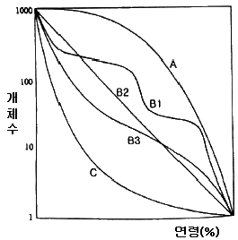
- A
- B2
- B3
- C
(정답률: 75%)
10. 개체군 간의 상호작용 중 편리공생 관계인 것은?
- 집게와 말미잘
- 개미와 진딧물
- 참나무류와 겨우살이
- 콩과식물과 뿌리혹박테리아
(정답률: 65%)
11. 조각의 모양을 측정할 때, 둘레와 면적의 비가 크기에 따라 변하는 점을 보완하는 변형지수
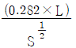
에 대한 설명으로 옳은 것은? (단, L은 둘레, S는 면적이다.)- 원에 대해서는 0이며, 불규칙한 모양에 대해서는 1에 가깝다.
- 원에 대해서는 0이며, 불규칙한 모양에 대해서는 무한대로 커진다.
- 원에 대해서는 1이며, 불규칙한 모양에 대해서는 무한대로 커진다.
- 원에 대해서는 무한대로 커지며, 불규칙한 모양에 대해서는 0에 가깝다.
(정답률: 67%)
12. 파편화 초기에 큰 면적이 필요한 종이나 간섭에 민감한 종이 다른 서식처로 이동하거나 사라지는 것을 무엇이라고 하는가?
- 혼잡효과
- 국지적 멸종
- 초기배제효과
- 장벽과 격리화
(정답률: 75%)
13. 밀도가 다른 두 수층의 경계면에 생기는 내부파(internal wave)의 영향이 아닌 것은?
- 용승류가 일어남
- 두 수층의 수직혼합을 일으킴
- 저층의 영양염을 상층에 공급
- 표층의 식물 플랑크톤 생산을 증가시킴
(정답률: 59%)
14. 생물체에 있어 원상으로 다시 완전하게 돌아갈 수 있는 긴장을 탄성긴장이라 한다. 몸체의 탄성도(elasticity, M)를 구하는 식은?
- M = 저항/긴장
- M = 긴장/저항
- M = 스트레스/긴장
- M = 긴장/스트레스
(정답률: 64%)
15. 2개의 개체군이 서로의 성장과 생존에 이익을 주고 있으나 절대적인 의무관계가 아닌 것은?
- 상리공생(mutualism)
- 편해공생(amensalism)
- 편리공생(commensalism)
- 원시협동(protocooperation)
(정답률: 66%)
16. 종 다양성과 이질성의 관계를 나타내는 그래프로 옳은 것은?
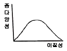
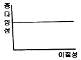
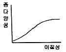
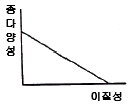
(정답률: 79%)
17. 부영영화의 피해에 관한 설명으로 옳지 않은 것은?
- 악취 발생
- 수중생태계 파괴
- 용존산소량 고갈에 따른 어패류 폐사
- 조류(algae)의 이상번식에 의한 투명도 증가
(정답률: 91%)
18. 토지 이용에 따른 경관특성 변화를 표현하는 요소가 아닌 것은?
- 연결성
- 둘레길이
- 인공구조물
- 조각의 크기
(정답률: 74%)
19. 비오톱 유형 분류의 결정요인이 아닌 것은?
- 식생형태
- 대기의 질
- 지형적 조건
- 토지이용 패턴
(정답률: 84%)
20. 하천 코리더의 기능으로 옳지 않은 것은?
- 수온의 조절
- 부영양화 증대
- 수문학적 조절
- 침전물과 영양물질의 여과
(정답률: 81%)
2과목: 생태복원계획
21. 생태계 복원 절차 중 가장 먼저 수행해야 하는 것은?
- 복원계획의 작성
- 복원목적의 설정
- 대상 지역의 여건 분석
- 시행, 관리, 모니터링의 실시
(정답률: 78%)
22. 저감대책 수립에 관한 내용으로 옳지 않은 것은?
- 둘레/면적이 최소인 패치는 에너지, 물질, 생명체 등의 자원을 보호하는데 효과적이다.
- 둘레/면적이 최대인 패치는 외부와 에너지, 물질, 생명체의 상호작용을 증가시키는데 효과적이다.
- 패치가 작아질 것으로 예측될 경우 큰 패치를 선호하는 종의 서식여부를 반드시 확인해야 한다.
- 패치가 작아질 경우 작은 패치를 선호하는 생물종이 증가하므로, 환경영향의 저감측면에서 유리하다.
(정답률: 75%)
23. 도시생태공원 계획 시 고려할 사항으로 옳지 않은 것은?
- 기존의 수림지나 초지, 수변공간 등과 인접한 장소를 선정한다.
- 식재수종 선정 시 자생종보다 외래종을 우선 고려한다.
- 구역의 보호와 육성을 위해 이용제한구역 등을 필요에 따라 마련한다.
- 세부적인 환경을 고려하여 야생동물을 위한 환경을 조성한다.
(정답률: 88%)
24. 다음 설명과 같이 생태계에 대한 개발사업의 영향을 평가하는 것은?
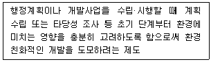
- 비오톱 평가
- 환경영향평가
- 개발행위허가
- 사전환경성 검토
(정답률: 62%)
25. 개별 공간 차원의 환경계획으로 옳은 것은?
- 생태도시
- 생태공원
- 지속가능도시
- 생태 네트워크 계획
(정답률: 72%)
26. 어메니티 플랜의 기본방향이 아닌 것은?
- 지역이 보유하고 있는 유형 및 무형의 문화자원을 발굴하고, 보호·육성한다.
- 행정기관이 주도로 지침을 만들고 주민들은 이 지침에 일사분란하게 따르도록 한다.
- 지역의 자연환경 및 인공환경의 상태를 청결하게 하여 지역을 깨끗하고 조용하게 유지한다.
- 주민들이 환경을 만들어가고, 일상에서 많이 접하도록 하여 친근함을 느낄 수 있는 분위기를 조성한다.
(정답률: 81%)
27. 토지의 적성평가와 국토환경성평가에 관한 설명으로 옳지 않은 것은?
- 토지의 적성평가와 국토환경성평가 모두 전 국토를 대상으로 한다.
- 토지의 적성평가는 국토의 계획 및 이용에 관한 법률, 국토환경성평가는 환경정책기본법에 근거한다.
- 평가단위로서는 토지의 적성평가는 토지의 필지단위(미시적)로, 국토환경성평가는 토지의 필지가 아닌 지역적 단위(거시적)로 한다.
- 토지의 적성평가는 표고 등 물리적 특성, 토지이용특성, 공간적 입지성을 기준으로, 국토환경성평가는 생태계보전지역 등 법제적 지표, 자연성 정도 등 환경적 지표를 기준으로 한다.
(정답률: 68%)
28. 생태자연도 등급 구분상 별도관리지역은?
- 생태계가 특히 우수하거나 경관이 특히 수려한 지역
- 다른 법률에 의하여 보전되는 지역 중 역사적·문화적·경관적 가치가 있는 지역
- 생물의 지리적 분포한계에 위치하는 생태계 또는 주요 식생의 유형을 대표하는 지역
- 멸종위기 야생생물의 주된 서식지·도래지 및 주요 생태측 또는 주요 생태통로가 되는 지역
(정답률: 64%)
29. 초지복원 시 사용하는 식물종자에 관한 내용으로 옳지 않은 것은?
- 재래식물은 외래식물에 반대되는 개념으로 어느 지역에 자생하는 식물로서 외래종과 귀화종을 제외한다.
- 오랜 기간 지방의 기후와 입지환경에 잘 적응해서 자연 상태로 널리 분포하고 있는 식물을 그 지역의 주구성종이라 한다.
- 보전종은 주구성종의 성장을 도와 토양 및 주변 식물을 보전하기 위하여 혼파 또는 혼식하는 식물을 총칭하며, 보통 비료목초와 선구식물을 사용한다.
- 도입식물이란 자연 혹은 인위적으로 이루어진 훼손지나 나지에 식생을 개선할 목적으로 파종, 식재 등 여러 가지 방법으로 들여온 식물을 말한다.
(정답률: 52%)
30. 정수(挺水)식물에 속하는 식물종은?
- 매자기
- 붕어마름
- 부레옥잠
- 물수세미
(정답률: 65%)
31. 비탈면 기울기에 따른 식물 생육 특성으로 옳지 않은 것은?
- 30° 이하 : 식물 생육이 양호하고, 피복이 완성되면 표면 침식이 거의 없다.
- 30~35° : 그대로 방치하는 경우 주변의 자연 침입으로 식물 군락이 성립되는 한계 기울기이며, 식물의 생육은 왕성하다.
- 35~40° : 식물의 생육은 양호한 편이지만, 키가 낮거나 중간 정도인 수목이 많다.
- 45~60° : 생육이 현저하게 불량하고 수목의 키가 낮게 성장하며, 초본류의 쇠퇴가 빨리 일어난다.
(정답률: 60%)
32. 부엽식물이 아닌 것은?
- 마름
- 자라풀
- 개구리밥
- 노랑어리연꽃
(정답률: 64%)
33. 지리정보체계(GIS)의 기능적 요소가 아닌 것은?
- 결과 출력
- 조정과 분석
- 레이어 전환
- 자료의 전처리
(정답률: 78%)
34. 자연환경복원계획 수립 시의 원칙으로 옳지 않은 것은?
- 대상 지역의 생태적 특성을 존중하여 복원계획을 수립한다.
- 다른 지역과 차별화되는 자연적 특성을 우선적으로 고려한다.
- 유지비용이 적으며 생태적으로 지속가능한 복원방안을 모색한다.
- 도입되는 식생은 조기녹화가 가능한 식생을 위주로 선정한다.
(정답률: 68%)
35. 자연환경 보전대책 중 미티게이션에 대한 설명으로 옳은 것은?
- 회피란 중요한 생육·서식 환경이 사라지게 될 경우 다른 장소에 기존 환경과 유사한 환경을 창출하는 방법이다.
- 대체란 중요한 생육·서식환경에 직접적인 영향을 피할 수 없는 경우 그 영향을 최소한으로 그치게 하는 방법이다.
- 일반도로 계획에서는 기본적으로 회피, 저감의 방법을 이용하고, 그 방법으로 충분하게 대응할 수 없는 경우 대상의 방법을 검토한다.
- 저감이란 중요한 생육·서식환경을 노선에서 떨어뜨려서 계획하거나, 터널이나 교량구조를 채용하는 등 직접적인 영향을 자연환경에 미치지 않게 하는 방법이다.
(정답률: 66%)
36. 다음에서 설명하는 토지의 토양분류 등급은?
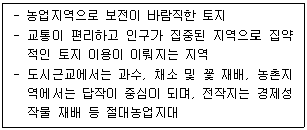
- 1급지
- 2급지
- 3급지
- 5급지
(정답률: 70%)
37. 도로 비탈면의 구조에 포함되지 않는 것은?
- 노상
- 소단
- 비탈어깨
- 성토비탈면
(정답률: 68%)
38. 자연환경보전·이용시설 설치의 기본 방향이 아닌 것은?
- 친자연성
- 지속가능성
- 안전성 확보
- 시설의 가변성
(정답률: 88%)
39. 생태복원의 유형 중에서 대체에 대한 설명으로 옳지 않은 것은?
- 다른 생태계로 원래 생태계를 대신하는 것
- 훼손된 지역의 입지에 동일한 생태계를 만들어주는 것
- 구조에 있어서는 간단하고 보다 생산적일 수 있음
- 초지를 농업적 목초지로 전환하여 높은 생산성을 보유하게 함
(정답률: 59%)
40. 훼손된 생태계의 복원에 관한 설명으로 옳지 않은 것은?
- 녹지녹원 시 훼손지에 대한 침식방지 및 식물의 조기 정착을 목적으로 짧은 시간 내에 도입초종에 의하여 녹화해야 한다.
- 생태계의 복원은 서식처 속 생물종의 복원과 생물종의 삶터로써 온전한 기능과 구조를 갖춘 서식처의 복원으로 구성된다.
- 훼손된 서식처로 인해 멸종 위기에 처한 생물종을 포함한 일련의 목표종과 그 목표종이 서식 가능한 서식처를 복원하는 것이 일차적 목표이다.
- 식생 복원 시 해당 토지영역 내에서 복원되는 구성종의 온전한 생애주기(life cycle)와 태양에너지의 이용패턴을 고려하여 계획해야 한다.
(정답률: 75%)
3과목: 생태복원설계·시공
41. 빈 칸에 들어갈 내용으로 옳은 것은?
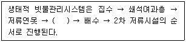
- 물넘이
- 저류조
- 침투연못
- 잔디형 수로
(정답률: 68%)
42. 수고가 7~12m 정도인 교목을 식재할 때, 자연토에 적합한 유효 토심의 깊이는?
- 상층 20cm, 하층 20cm
- 상층 30cm, 하층 90cm
- 상층 60cm, 하층 20cm
- 상층 60cm, 하층 90cm
(정답률: 60%)
43. 자연환경보전·이용시설의 설계단계 고려사항에 관한 설명으로 옳지 않은 것은?
- 기반조성 설계 시 생물이 생육·서식할 수 있도록 충분히 고려한다.
- 관찰공간 설계 시에는 관찰 목적 및 대상, 태양의 방향, 주요 동선 및 관찰대상공간의 시각적·물리적 차폐 등을 충분히 고려한다.
- 시설 설계에 있어 진입부와 데크의 완만한 경사 처리, 점자 안내판 등 사회적 약자의 편의를 최대한 반영한다.
- 재료와 소재 선정 시 여러 지역의 목재 및 석재 등 자연재료의 혼용을 우선적으로 고려하여 이용자의 만족을 추구한다.
(정답률: 79%)
44. 토양 유기물 함량을 높이는 방법으로 옳지 않은 것은?
- 식물의 유체(遺體)는 토양으로 되돌린다.
- 땅을 빈번히 갈아서 미생물에 의한 토양 분해를 촉진한다.
- 유기물이 토양으로부터 유실되는 현상인 토양 침식을 막는다.
- 토양 중 유기물의 함량을 높이려면 신선퇴비보다는 완숙퇴비가 더 효과적이다.
(정답률: 88%)
45. 평균단면적법을 이용해 비탈다듬기공사에 사용할 토사량을 구할 때, 양 단의 단면적이 각각 2.1m2, 0.7m2이고, 그 사이의 거리가 6m 인 경우의 토사량(m3)은?
- 2.4
- 8.4
- 8.8
- 16.8
(정답률: 82%)
46. 표토에 관한 설명으로 옳지 않은 것은?
- 경운에 의해 이동되는 부위이다.
- 토양의 표면에 위치한 A층을 말한다.
- 산림에서는 B층까지를 포함하여 말한다.
- 양분과 수분의 저장처로 생산성과는 관련이 없다.
(정답률: 79%)
47. 단면적이 12m2이고, 윤주가 8m인 수로의 평균 깊이(m)는?
- 1.5
- 2
- 2.5
- 3
(정답률: 70%)
48. 자연생태복원공사 시행 시 시공관리 3대 목표가 아닌 것은?
- 공정관리
- 노무관리
- 원가관리
- 품질관리
(정답률: 79%)
49. 방문객센터를 절충형으로 조성할 때의 고려사항에 관한 설명으로 옳지 않은 것은?
- 주변 자연·역사·문화관찰로와 연계되지 않도록 독립적으로 조성한다.
- 센터의 규모는 최소 약 400m2, 평균 60m2, 최대 800m2로 조성하는 것이 적정하다.
- 공원 탐방객의 편의와 자연 및 역사에 대한 이해를 돕기 위해 주요 탐방거점 공간에 설치한다.
- 관찰지점 안내, 이용 상황, 당일 기상정보 등 실시간에 가까운 각종 정보를 제공해 이용자의 이용을 돕는다.
(정답률: 88%)
50. 토양 중의 질소공급원으로 슬러지를 사용할 경우, 슬러지 사용량(kg/10ha)을 계산하는 식으로 옳은 것은? (단, A : 질소 시비량, a : 수분함유비율(%), b : 슬러지 건조물 중의 질소 비(%), c : 질소 유효율이다.)
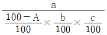
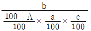
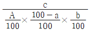
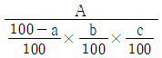
(정답률: 59%)
51. 생태·자연도 1등급 권역에 관한 설명으로 옳지 않은 것은?
- 생물다양성이 풍부하고 보전가치가 큰 생물자원이 분포하는 지역
- 생태계가 특히 우수하거나 경관이 수려한 지역
- 생물의 지리적 분포한계에 위치하는 생태계 지역
- 각 시·도에서 생태·경관보전지역으로 지정한 지역
(정답률: 40%)
52. 도시생태계를 구성하는 생물종의 특징이 아닌 것은?
- 이입종의 정착
- 고차 소비자의 부재
- 초식성 동물의 증가
- 난지성종(따뜻한 곳에 사는 종)의 증가
(정답률: 67%)
53. 안전사고의 발생원인 중 물적 원인이 아닌 것은?
- 복장 불량
- 예산 부족
- 급속한 시공
- 협소한 작업장
(정답률: 59%)
54. 다음에서 설명하는 배수로의 배치 유형은?
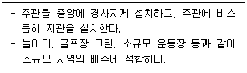
- 선형
- 어골형
- 차단형
- 평행형
(정답률: 75%)
55. 식재할 수목을 가식할 때의 유의사항으로 옳지 않은 것은?
- 토양의 배수가 불량할 때에는 배수시설을 설치한다.
- 원활한 통풍을 위해 수목 간 식재 간격을 충분히 둔다.
- 수목의 뿌리 부분은 공기에 잘 노출되도록 배분하여 가식한다.
- 가식할 장소에는 가식기간 중의 관리를 위한 작업통로를 설치한다.
(정답률: 88%)
56. 다음의 기준에 따라 수관층위별 식재밀도를 정하여 다층위 구조의 환경보전림을 조성할 때, 빈 칸에 각각 들어갈 내용으로 옳은 것은?
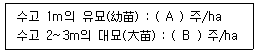
- A : 2000, B : 800
- A : 2000, B : 8000
- A : 20000, B : 800
- A : 20000, B : 8000
(정답률: 54%)
57. 호수나 연못에서 흔하게 관찰되는 부유식물로, 부영양화 물질을 제거하는 수질정화식물은?
- 부들
- 나사말
- 개구리밥
- 물질경이
(정답률: 66%)
58. 비탈면 녹화에 이용되는 식물 중 콩과 식물이 아닌 것은?
- 붉나무
- 비수리
- 참싸리
- 자귀나무
(정답률: 77%)
59. 생태관광지역 내에 탐방시설을 계획할 때 고려할 사항으로 옳지 않은 것은?
- 자연환경 보호를 위해 과도하지 않은 규모의 시설이 되도록 한다.
- 탐방로의 기·종점이나 휴게지점에서의 보행시간을 고려하여 휴게공간을 적절히 배치한다.
- 생태관광지역 내 주요 생물상 서식지역을 포함하여 자연의 동·식물을 관찰할 수 있도록 한다.
- 탐방시설 중 다리를 설치할 때는 안전성, 편리성과 동시에 자연환경의 손상을 최소화한다.
(정답률: 84%)
60. 서식처 복원 시 목표종과 함께 도입할 종을 연결한 것으로 옳지 않은 것은?
- 도룡뇽 - 수련
- 반딧불이 - 다슬기
- 잠자리 - 애기부들
- 피라미 – 초피나무
(정답률: 57%)
4과목: 생태복원 사후관리·평가
61. 생물다양성 보전 및 이용에 관한 법규상 생태계 교란 생물이 아닌 것은?
- 뉴트리아(Myocastor coypus)
- 비바리뱀(Sibynophis dhinensis)
- 황소개구리(Lithobates catesbeianus)
- 파랑볼우럭(블루길)(Lepomis macrochirus)
(정답률: 82%)
62. 자연환경보전법상 생태·자연도의 등급 구분 중 별도관리지역에 대한 설명으로 옳은 것은?
- 생물의 지리적 분포한계에 위치하는 생태계 지역 또는 주요 식생의 유형을 대표하는 지역
- 장차 보전의 가치가 있는 지역 또는 1등급 권역의 외부지역으로서 1등급 권역의 보호를 위하여 필요한 지역
- 「야생생물 보호 및 관리에 관한 법률」에 따른 멸종위기 야생생물의 주된 서식지·도래지 및 주요 생태축 또는 주요 생태통로가 되는 지역
- 다른 법률의 규정에 의하여 보전되는 지역 중 역사적·문화적·경관적 가치가 있는 지역이거나 도시의 녹지보전 등을 위하여 관리되고 있는 지역으로서 대통령령으로 정하는 지역
(정답률: 68%)
63. 국토의 계획 및 이용에 관한 법률상 특별시·광역시·특별자치시·특별자치도의 도시·군기본계획의 확정에 관한 설명 중 옳지 않은 것은?
- 특별시장·광역시장·특별자치시장 또는 특별자치도지사는 도시·군기본계획을 수립하거나 변경한 경우에는 관계 행정기관의 장에게 관계 서류를 송부하여야 한다.
- 협의 요청을 받은 관계 행정기관의 장은 특별한 사유가 없으면 그 요청을 받은 날로부터 30일 이내에 특별시장·광역시장·특별자치시장 또는 특별자치도지사에게 의견을 제시하여야 한다.
- 특별시장·광역시장·특별자치시장 또는 특별자치도지사는 도시·군기본계획을 수립·변경한 경우에는 대통령령으로 정하는 바에 따라 그 계획을 공고하고 일반인이 열람할 수 있도록 하여야 한다.
- 특별시장·광역시장·특별자치시장 또는 특별자치도지사는 도시·군기본계획을 수립 또는 변경하고자 하는 때에는 관계 행정기관의 장과 협의한다면 별도의 지방도시계획위원회의 심의를 생략할 수 있다.
(정답률: 70%)
64. 다음에서 설명하는 생태복원 사업의 시공 후 관리방법은?
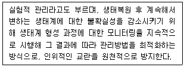
- 순응관리
- 운영관리
- 적용관리
- 하자관리
(정답률: 67%)
65. 국토의 계획 및 이용에 관한 법률상 다음과 같은 사항을 내용으로 하여 수립하는 계획은?
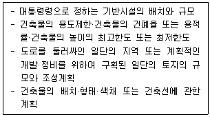
- 개발기본계획
- 광역도시계획
- 성장관리계획
- 지구단위계획
(정답률: 59%)
66. 자연환경보전법규상 환경부장관의 승인을 받아 생태계보전부담금의 반환을 받을 수 있는 사업으로 옳지 않은 것은? (단, 생태계보전부담금의 부과대상 사업의 일부로서 추진되는 사업이 아니다.)
- 소생태계 조성사업
- 생태통로 조성사업
- 생태학습 전문학원 조성사업
- 자연환경보전·이용시설의 설치사업
(정답률: 66%)
67. 자연공원법규상 자연공원의 구분에 해당하지 않은 것은?
- 국립공원
- 군립공원
- 도립공원
- 도시자연공원
(정답률: 77%)
68. 자연환경보전법규상 용어의 정의로 옳지 않은 것은?
- “자연유보지역”이라 함은 멸종위기 야생동·식물의 서식처로서 중요하거나 생물다양성이 풍부하여 특별히 보전할 가치가 큰 지역을 말한다.
- “소(小)생태계”라 함은 생물다양성을 높이고 야생동·식물의 서식지간의 이동가능성 등 생태계의 연속성을 높이거나 특정한 생물종의 서식조건을 개선하기 위하여 조성하는 생물서식공간을 말한다.
- “생물다양성”이라 함은 육상생태계 및 수생생태계(해양생태계를 제외한다)와 이들의 복합생태계를 포함하는 모든 원천에서 발생한 생물체의 다양성을 말하며, 종내·종간 및 생태계의 다양성을 포함한다.
- “생태·자연도”라 함은 산·하천·내륙습지·호소(湖沼)·농지·도시 등에 대하여 자연환경을 생태적 가치, 자연성, 경관적 가치 등에 따라 등급화하여 법규정에 의하여 작성된 지도를 말한다.
(정답률: 66%)
69. 도로 비탈면의 식생복원 효과가 아닌 것은?
- 표토의 침식방지
- 사면붕괴 위험 증진
- 유전적 격리의 해소
- 서식권의 연속성 확보
(정답률: 84%)
70. 야생생물 보호 및 관리에 관한 법규상 멸종위기 야생생물 Ⅱ급에 해당하는 것은?
- 만년콩
- 한라솜다리
- 단양쑥부쟁이
- 털복주머니란
(정답률: 57%)
71. 생태복원사업의 모니터링 계획 수립 과정을 순서대로 배열한 것은?
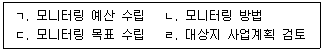
- ㄱ→ㄴ→ㄷ→ㄹ
- ㄱ→ㄷ→ㄹ→ㄴ
- ㄹ→ㄱ→ㄷ→ㄴ
- ㄹ→ㄷ→ㄴ→ㄱ
(정답률: 68%)
72. 국토환경평가지도의 법제적 평가 항목 중 자연환경부문에 해당하는 것은?
- 상수원보호구역
- 생태경관보전지역
- 자연환경보전지역
- 산림유전자원보호구역
(정답률: 44%)
73. 독도 등 도서지역의 생태계 보전에 관한 특별법규상 특정도서로 지정할 수 없는 것은?
- 자연생태계 등의 보전을 위하여 해양수산부장관이 추천하는 도서
- 지형 또는 지질이 특이하여 학술적 연구 또는 보전이 필요한 도서
- 화산, 기생화산(寄生火山), 계곡, 하천, 호소, 폭포, 해안, 연안, 용암동굴 등 자연경관이 뛰어난 도서
- 수자원(水資源), 화석, 희귀 동식물, 멸종위기 동식물, 그 밖에 우리나라 고유 생물종의 보존을 위하여 필요한 도서
(정답률: 75%)
74. 생태복원 사업의 유지관리 항목 중 정기적 유지관리 항목이 아닌 것은?
- 서식지 및 시설물 관리
- 교목·관목·초화류 생육 상태 확인
- 토양환경, 수환경 등의 안정성 확인
- 장마, 홍수, 가뭄, 태풍 등이 발생한 경우 시설물의 훼손 상태
(정답률: 75%)
75. 모니터링 계획 수립 시, 대상지 사업계획에 대한 전반적인 검토를 위한 사업목표와 전략에 관한 설명으로 옳지 않은 것은?
- 일반적으로 대상지의 사업목표는 복원사업의 다양한 유형인 복원, 복구, 개선, 창출 등과 같이 목적을 갖게 된다.
- 대상지의 마스터플랜(기본계획안)을 통해 대상지 내 분야별 계획을 파악한 후 전체와 공간별 계획을 파악한다.
- 목적 달성을 위한 전략은 대상지의 생태기반환경을 복원하고, 생물종 서식을 유도하는 등 세부적으로 분야를 나누어 추진하여야 한다.
- 대상지의 사업목표와 전략을 파악하여 사업유형과 기본방향을 이해하고, 목적을 달성할 수 있도록 단계별 또는 분야별 전략을 구상해야 한다.
(정답률: 60%)
76. 자연환경보전법상 생태·경관보전지역의 구분에 속하지 않는 것은?
- 생태·경관관리보전지역
- 생태·경관완충보전지역
- 생태·경관전이보전지역
- 생태·경관핵심보전지역
(정답률: 55%)
77. 도시지역에서 잠자리의 서식환경을 위하여 연못을 만들어 관리할 때의 유의사항으로 옳지 않은 것은?
- 배수량의 조절은 한 번에 물을 빼는 것을 피하고, 1/3 정도로 나누어 교체한다.
- 간이 잠자리 유치 수조 등에 물을 보급할 때에는 1/4~1/3 정도의 수돗물을 사용해도 된다.
- 인공연못이나 간이 잠자리 유치 수조에서는 안정적인 물의 공급을 위해 물 교체 횟수를 최대한으로 늘린다.
- 연못 바닥의 모래뻘, 낙엽 등은 유충의 거처나 먹이의 발생원이기 때문에 가능한 한 남기도록 한다.
(정답률: 69%)
78. 국토의 계획 및 이용에 관한 법률상 용도지구의 지정에 관한 설명으로 옳지 않은 것은?
- 경관제한지구 : 풍수해, 산사태, 지반의 붕괴, 그 밖의 재해를 예방하고 시설경관을 보호, 형성하기 위하여 필요한 지구
- 취락지구 : 녹지지역·관리지역·농림지역·자연환경보전지역·개발제한구역 또는 도시자연공원구역의 취락을 정비하기 위한 지구
- 보호지구 : 문화재, 중요 시설물(항만, 공항 등 대통령령으로 정하는 시설물을 말한다) 및 문화적·생태적으로 보존가치가 큰 지역의 보호와 보존을 위하여 필요한 지구
- 특정용도제한지구 : 주거 및 교육 환경 보호나 청소년 보호 등의 목적으로 오염물질 배출시설, 청소년 유해시설 등 특정시설의 입지를 제한할 필요가 있는 지구
(정답률: 73%)
79. 수질개선 및 생태복원을 위한 생태하천 복원사업의 추진방향으로 옳지 않은 것은?
- 수생태계 조사·평가를 바탕으로 하천특성에 맞는 복원 목표를 설정하여야 한다.
- 어류 등 생물의 서식기능을 높이기 위해 하천의 저수로를 고착화하기 위한 방안을 마련해야 한다.
- 수질오염원인을 제거하고 풍부한 물 공급을 위해 하상여과, 식생수료 등 건전한 물순환 체계를 구축하여야 한다.
- 하천 주변의 자연환경까지 연계한 횡적네트워크와 발원지에서 하구까지 연계한 종적 네트워크를 연결하기 위한 방향으로 추진한다.
(정답률: 85%)
80. 환경정책기본법규상 수질 및 수생태계 기준 중 하천에서 사람의 건강보호 기준으로 옳지 않은 것은? (단, 단위는 mg/L 이다.)
- 납(Pb) : 0.02 이하
- 사염화탄소 : 0.004 이하
- 음이온 계면활성제(ABS) : 0.5 이하
- 테트라클로로에틸렌(PCE) : 0.04 이하
(정답률: 50%)